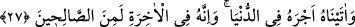

İlk kopuş, her şeyden ayrılmak, bağları kesmektir
“Şüphesiz O, mutlak güç ve hikmet sâhibidir, dedi.” Yani, şüphesiz O Allah,
Aziz’dir; işinde gâlib ve üstündür; düşmanlarımın bana tasallut etmesine manî olur.
Hakîm’dir, hikmet sâhibidir. Hikmet ve maslahat olan şeyleri yapar. Bana da hâlime en
uygun olan şeyleri emreder.
Bir kimseye Allah’a ibâdet etmek bir beldede takdir olunmamışa oradan çıksın ve
başka bir beldeye hicret etsin.
et-Te’vîlâtü’n-Necmiyye’de der ki: O Allah Azîz’dir. O, bir kulunun kendisine vâsıl
olmasından yücedir. O’na ancak Allah’ın dışındaki şeyleri (mâsivâ) tamamen terk eden
ve varlıktan tamamen uzaklaşan kimse vâsıl olabilir ve O’na yaklaşabilir. O Allah
Hakîm’dir. Hikmeti gereği, ancak benlik kirinden temizleneni kabul eder. Nitekim
Peygamber (s.a.): “Allah temizdir, ancak temiz olanları kabul eder”[172] buyurmuştur.
Rivâyete göre, İbrâhim (a.s.), ilk hicret eden kimsedir. Her peygamberin bir hicreti
vardır. İbrâhim (a.s.)’ın ise iki hicreti vardır. O, Kûsî’den- burası Kûfe civarında bir
köydür- Lût (a.s.) ve Sâre ile birlikte Harran’a hicret etti; oradan da Şam’a gidip
Filistin’e yerleşti. Lût (a.s.) ise Sodom’da konakladı ve orada ikâmet etti.
Keşşâf müellifi şöyle nakleder: İbrahim (a.s.) hicret esnâsında yetmiş beş yaşında idi.
Bu yaşta iken Allâh Teâlâ ona Sâre’nin hizmetçisi olan Hacer’den İsmail’i verdi.
İbrahim yüz yirmi yaşına gelince Hak Teâlâ ona Sâre’den bir evlâd bağışladı. Bununla
ilgili olarak Kur’ân-ı Kerîm’de de şöyle buyurur:
27. Ona İshak ve Ya’kub’u bağışladık. Peygamberliği ve kitapları, onun soyundan
gelenlere verdik. Ona dünyada mükâfâtını verdik. Şüphesiz o, âhirette de sâlihler
(zümresin) dendir.
“Ona” yâni İbrâhim’e, yaşlı ve kısır zevcesi Sâre’den “İshak’ı ve” torunu “Yâkub’u
bağışladık.” İshâk, Hâcer’den olan İsmâil (a.s.)’dan sonra dünyaya geldi. Yâkub ise,
oğlunun oğludur, yâni İbrâhim (a.s)’ın torunudur. Bu doğum, İbrâhim (a.s.)’ın zevcesi
Sâre, kısır olduğu için doğumdan ümid kesildiği bir zamanda vukû bulmuştu.
Kâdî der ki: Bu yüzden âyette İsmâil (a.s.) zikredilmemiştir. Yâni makam, imtinân
makamı (nimeti söyleme ve dile getirme yeri) dir. İshâk ve Yâkub’taki imtinan,
zikredilen bu sebepten dolayı daha çoktur.
Rivayete göre, Allah Teâlâ İbrâhim (a.s.)’a dört evlâd ihsan etmişti: Sâre’den İshâk
(a.s), Hâcer’den İsmâil (a.s) ve diğer zevcelerinden Medyen ve Medâyin.
“Peygamberliği ve kitapları, onun soyundan” yâni İsmâil’in oğulları ile